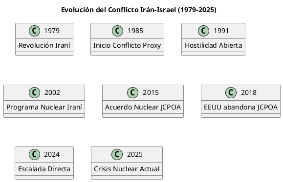
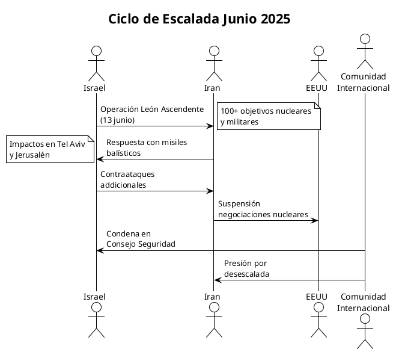
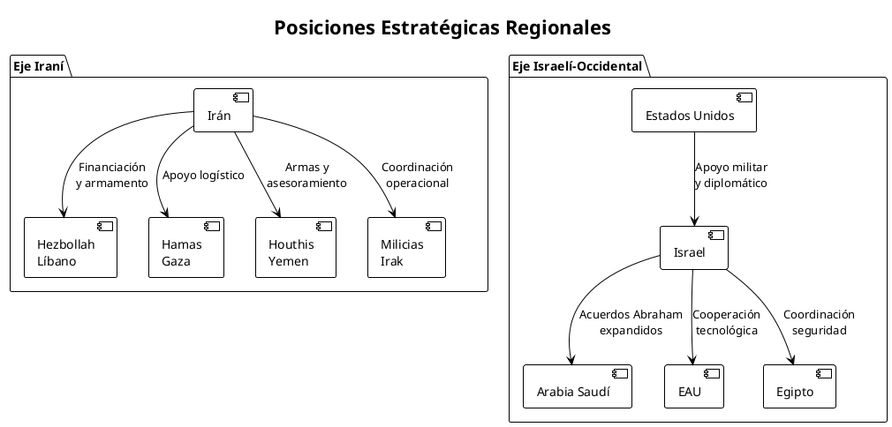

El Conflicto Irán-Israel: Análisis Geopolítico de una Crisis Nuclear
El Conflicto Irán-Israel: Análisis Geopolítico de una Crisis Nuclear en Escalada
La escalada del conflicto Irán-Israel en junio de 2025 representa un punto de inflexión crítico en la geopolítica de Oriente Medio. Los ataques israelíes del 13 de junio de 2025 contra instalaciones nucleares iraníes, que impactaron aproximadamente 100 objetivos, han precipitado una crisis que amenaza con extenderse más allá del ámbito regional. La respuesta iraní con misiles balísticos que alcanzaron Jerusalén y Tel Aviv, causando 78 muertos según fuentes iraníes, marca la transición de un conflicto proxy a un enfrentamiento directo entre ambas potencias regionales.
Orígenes Históricos del Conflicto
La Transformación Post-1979
Tras la Revolución Iraní de 1979, el gobierno de Irán adoptó una postura crítica hacia Israel, estableciendo el anti-sionismo militante como componente clave de su ideología. Esta transformación convirtió a dos antiguos aliados estratégicos (durante la era del Sha) en adversarios regionales fundamentales.
Evolución del Conflicto Proxy (1985-2024)
Desde 1985, Irán e Israel han estado involucrados en un conflicto proxy que ha afectado significativamente la geopolítica de Oriente Medio. La transición de la paz fría a la hostilidad abierta comenzó en los años 90, tras el colapso de la Unión Soviética y la derrota de Irak en la Guerra del Golfo.

Situación Actual: La Crisis de Junio 2025
Operación "León Ascendente"
El 12-13 de junio de 2025, Israel lanzó la Operación "León Ascendente", una campaña de ataques aéreos masivos que impactó instalaciones nucleares y liderazgo militar iraní. Esta operación marca un precedente sin precedentes en la confrontación bilateral.
Objetivos Estratégicos Israelíes
Los ataques israelíes perseguían múltiples objetivos:
- Degradar significativamente las capacidades nucleares iraníes
- Eliminar liderazgo científico y militar clave
- Debilitar la infraestructura de misiles balísticos
- Enviar una señal disuasoria regional
Respuesta Iraní: Escalada Simétrica
La respuesta iraní incluyó ataques con misiles balísticos contra objetivos israelíes, incluyendo impactos en Rishon Lezion que causaron al menos una muerte y más de 20 heridos. Irán también suspendió su participación en las negociaciones nucleares programadas para el 15 de junio en Mascate.

Posiciones y Estrategias Geopolíticas
Estrategia Iraní: Hegemonía Regional a través del "Eje de Resistencia"
La estrategia iraní se fundamenta en varios pilares:
- Deterrencia Asimétrica: Utilización de proxies regionales (Hezbollah, Hamas, Houthis, milicias iraquíes)
- Programa Nuclear: Como herramienta de disuasión y prestigio regional
- Influencia Sectaria: Explotación de divisiones sunita-chiita
- Confrontación con el "Eje Occidental": Oposición a Israel y Estados Unidos como legitimador interno
Estrategia Israelí: Prevención y Superioridad Cualitativa
Israel ha desarrollado una doctrina basada en:
- Prevención Nuclear: Impedir a toda costa la nuclearización iraní
- Superioridad Militar Cualitativa: Mantenimiento de ventaja tecnológica
- Operaciones Encubiertas: Guerra cibernética y asesinatos selectivos
- Alianzas Estratégicas: Fortalecimiento de vínculos con EEUU y países árabes moderados

El Factor Estados Unidos
Posición Estratégica Estadounidense
Estados Unidos mantiene una posición compleja en el conflicto:
- Apoyo Incondicional a Israel: Suministro de armamento avanzado y respaldo diplomático
- Disuasión de Escalada Regional: Prevención de guerra total que involucre a otros actores
- Presión sobre Irán: Mantenimiento del régimen de sanciones y aislamiento
Dilemas de la Política Estadounidense
La administración estadounidense enfrenta tensiones entre:
- Respaldo a las operaciones preventivas israelíes
- Evitación de escalada que requiera intervención directa
- Mantenimiento de relaciones con aliados árabes
- Gestión de crisis energética global
Análisis de Ganadores y Perdedores
Ganadores Potenciales
China y Rusia
- Debilitamiento de influencia occidental en la región
- Oportunidades energéticas por inestabilidad del Golfo Pérsico
- Venta de armamento a actores regionales
Arabia Saudí y EAU
- Legitimación de alianza con Israel contra amenaza iraní común
- Fortalecimiento de posición como alternativa a liderazgo iraní
Perdedores Evidentes
Irán
- Degradación de capacidades nucleares y militares
- Aislamiento internacional creciente
- Presión económica intensificada
Poblaciones Civiles
- Casualties directas de los ataques
- Inestabilidad económica regional
- Riesgo de escalada a conflicto regional amplio

Potencial Evolución del Conflicto
Escenarios Posibles
Escenario 1: Desescalada Controlada (Probabilidad: 30%)
- Presión internacional efectiva para cese al fuego
- Reanudación de negociaciones nucleares
- Mantenimiento del statu quo regional
Escenario 2: Escalada Regional Limitada (Probabilidad: 45%)
- Activación completa del "Eje de Resistencia" iraní
- Intervención de Hezbollah desde Líbano
- Conflicto multi-frente para Israel
Escenario 3: Guerra Regional Total (Probabilidad: 20%)
- Intervención militar directa estadounidense
- Participación de Arabia Saudí y otros aliados del Golfo
- Cierre del Estrecho de Hormuz
Escenario 4: Nuclearización Iraní (Probabilidad: 5%)
- Decisión iraní de desarrollar arma nuclear como respuesta
- Carrera armamentística nuclear regional
- Colapso del régimen de no proliferación
Factores Determinantes
Los factores que determinarán la evolución incluyen:
- Capacidad de disuasión estadounidense
- Resiliencia del programa nuclear iraní
- Unidad del "Eje de Resistencia"
- Estabilidad de precios energéticos
- Presión de la opinión pública internacional
Análisis de Riesgos Sistémicos
Riesgos Inmediatos (0-6 meses)
| Riesgo | Probabilidad | Impacto | Mitigación |
|---|---|---|---|
| Escalada multi-frente | Alta | Crítico | Diplomacia intensiva |
| Crisis energética global | Media | Alto | Reservas estratégicas |
| Nuclearización iraní | Baja | Crítico | Presión internacional |
| Intervención regional | Media | Alto | Disuasión militar |
Riesgos Estructurales (6-24 meses)
- Colapso del Orden Regional: Fragmentación del sistema de alianzas existente
- Proliferación Nuclear: Efecto dominó hacia otros actores regionales
- Crisis Humanitaria: Desplazamientos masivos de población
- Inestabilidad Energética: Disrupciones prolongadas en suministro global
Riesgos Sistémicos Globales
- Confrontación EEUU-China/Rusia: Polarización geopolítica global
- Crisis del Sistema Internacional: Debilitamiento de instituciones multilaterales
- Recesión Económica Global: Por shock energético prolongado
- Fragmentación del Internet: Ciberguerra y balcanización digital
Implicaciones para el Sistema Internacional
Debilitamiento del Régimen de No Proliferación
El hallazgo de la AIEA de incumplimiento iraní por primera vez en 20 años señala una crisis fundamental del régimen de no proliferación nuclear. La escalada actual podría precipitar:
- Retirada iraní del TNP
- Efecto demostración para otros aspirantes nucleares
- Erosión de la autoridad del AIEA
Transformación de Alianzas Regionales
El conflicto está acelerando realineamientos geopolíticos:
- Consolidación del eje Israel-países árabes sunitas
- Fortalecimiento de vínculos Irán-Rusia-China
- Marginalización de actores tradicionales (Egipto, Turquía)
Crisis del Multilateralismo
La sesión de emergencia del Consejo de Seguridad de la ONU evidencia las limitaciones del sistema multilateral ante crisis asimétricas donde una parte posee armas nucleares y la otra las busca.
Análisis Final: Hacia un Nuevo Equilibrio Regional
La crisis de junio 2025 representa más que una escalada táctica; constituye un momento de inflexión estratégica que podría redefinir permanentemente el equilibrio de poder en Oriente Medio. Las dimensiones nuclear, tecnológica y geopolítica del conflicto convergen en un punto crítico donde las decisiones de las próximas semanas determinarán la arquitectura de seguridad regional para las próximas décadas.
Conclusiones Estratégicas Clave
- Fin de la Ambigüedad Estratégica: La escalada ha terminado con décadas de confrontación indirecta, forzando una clarificación de posiciones
- Nuclearización Como Punto de No Retorno: El programa nuclear iraní se ha convertido en el factor determinante que podría precipitar cambios irreversibles
- Realineación Geopolítica Acelerada: Los tradicionales equilibrios regionales están siendo reemplazados por nuevas configuraciones de poder
- Dilema de la Disuasión Extended: Estados Unidos enfrenta el desafío de mantener credibilidad disuasoria sin ser arrastrado a un conflicto regional total
Recomendaciones Políticas
Para los actores internacionales, la crisis requiere:
- Diplomacia Preventiva Intensiva: Antes de que la escalada alcance umbrales irreversibles
- Coordinación Energética Global: Para mitigar impactos económicos sistémicos
- Fortalecimiento Institucional: Del régimen de no proliferación y organismos multilaterales
- Planificación de Contingencias: Para escenarios de escalada descontrolada
La ventana de oportunidad para una solución diplomática se estrecha rápidamente. La alternativa es una transformación del conflicto de una crisis regional a una confrontación con ramificaciones globales que podría definir el orden internacional del siglo XXI.
Referencias Documentales
- Al Jazeera. "Israel may have just pushed Iran across the nuclear line." 13 junio 2025.
- NBC News. "Iran fires missiles at Israel in escalating conflict over nuclear site attacks." 14 junio 2025.
- CBS News. "Iran launches missiles at Israel, and some hit Tel Aviv, as Israel attacks Iranian nuclear sites and commanders." 14 junio 2025.
- CNN. "Netanyahu says Israel launched operation Rising Lion, hits Iran's nuclear program and military leadership." 12 junio 2025.
- Reuters. "Iran strikes back at Israel with missiles over Jerusalem, Tel Aviv." 13 junio 2025.
- UN News. "Security Council meets in emergency session over Iran-Israel conflict." 13 junio 2025.
- Wikipedia. "June 2025 Israeli strikes on Iran." Actualizado junio 2025.
- Wikipedia. "Iran–Israel proxy conflict." Actualizado junio 2025.
- CSIS. "Escalating to War between Israel, Hezbollah, and Iran." Octubre 2024.
- Israel Policy Forum. "Israel-Hamas War: Iran and Its Proxies." Febrero 2025.
—
Nota del Autor: Este análisis se basa en información disponible hasta el 14 de junio de 2025. La naturaleza dinámica del conflicto requiere actualizaciones continuas de las evaluaciones estratégicas presentadas.